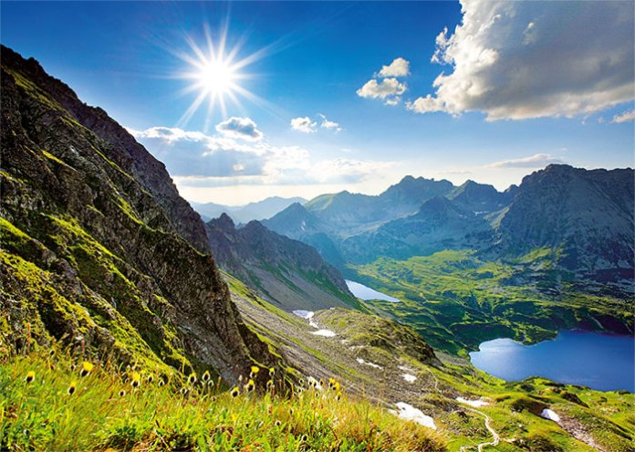
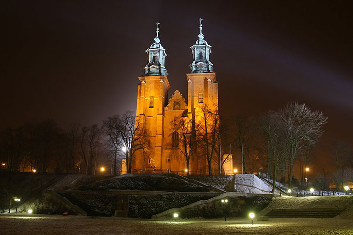

1. Dolina Pięciu Stawów w Tatrach

Dolina Pięciu Stawów położona jest na wysokości powyżej 1665 m n.p.m.
i stanowi przedłużenie Doliny Roztoki znajdującej się poniżej progu
największego polskiego wodospadu – Wielkiej Siklawy, który wypływa z
Wielkiego Stawu. Jak sama nazwa wskazuje znajduje się tutaj 5 stawów:
Przedni, Mały, Wielki, Czarny i Zadni. Szlak biegnący wzdłuż doliny
pozwala dojść do pierwszych czterech stawów, ostatni dobrze widoczny
jest z drogi na Zawrat. Oprócz wymienionych stawów na terenie doliny
znajduje się jeszcze szósty, niewielki zbiornik wodny – Wole Oko,
stąd można mieć wątpliwość, czy nazwa doliny została właściwie obrana.
2. Katedra w Gnieźnie

Trójnawowy kościół kryje wiele cennych zabytków m.in. nagrobek prymasa
Zbigniewa Oleśnickiego wykonany przez Wita Stwosza w 1495 roku. Główną i
boczne nawy otacza 14 kaplic w większości gotyckich. Jedną z barokowych
zaprojektował w 1727 roku słynny włoski architekt Pompeo Ferrari, którego
dzieła rozsiane są po całej Wielkopolsce.
W kruchcie kościoła znajduje się jeden z najcenniejszych zabytków w Polsce
– wykonane z brązu
Drzwi Gnieźnieńskie z końca XII wieku. Stanowią unikalne źródło informacji
o życiu u zwyczajach w tamtych czasach.
Kolejne kwatery opisują historię życia i śmierci św. Wojciecha. Został on
pochowany w podziemiach, podobnie jak Dobrawa, żona Mieszka I, dzięki któremu
Polska przyjęła chrzest.